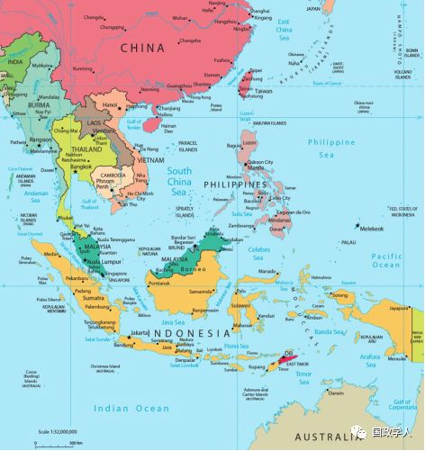
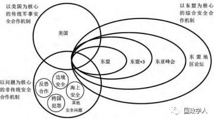

收录于合集

简 介
【作者】 韦红，华中师范大学中国周边安全与合作研究中心主任，政治与国际关系学院副院长，教授，博士生导师，法学博士，主要研究方向：东南亚地区国际关系；尹楠楠，华中师范大学政治与国际关系学院2015级国际政治专业硕士研究生，主要研究方向：东南亚地区国际关系。
【编辑】 汪琪茜
【审核】 陈成龙 高嘉琳
【来源】 《太平洋学报》，2018年第8期，第13-25页
内容摘要
目前，东南亚地区呈现出多种安全合作机制共存之局面，一方面各种安全机制越来越朝着多样化、板块化以及专业化方向发展，另一方面安全机制间的边界又越来越模糊，并呈现出交叠、竞争的趋势，形成了 “安全合作机制碎片化”现象。 ****该现象主要表现为机制多元化、机制复杂化和机制间的无序 —竞争化，而权力失衡、利益分化以及认同削减是造成东南亚地区安全合作机制碎片化的主要原因。同时，碎片化降低了地区安全合作制度化水平，加剧了安全合作机制的复杂性，削弱了东盟在地区安全治理中的主导性，从而对东南亚地区安全治理造成了严峻的挑战。故此，中国应通过成为东南亚安全治理架构的“议程设置国”，并积极推进亚信会议进程以促进地区现存安全合作机制间的协调，努力提高东南亚安全治理的制度化水平；支持以东盟为核心的综合安全合作机制，特别是积极参与并支持“东盟中心”的区域间主义动议与行动，坚持共同、综合、合作、可持续的“亚洲安全观”，以确保东盟在东南亚地区安全治理中的主导地位。

冷战期间，域外大国全面控制了东南亚地区的安全架构及安全秩序，东南亚沦为“帝国主义代理人”(Imperialist Surrogate)。冷战结束以后，东南亚开始致力于以东盟为中心的地区安全合作机制的建设，试图让东盟成为地区安全合作机制的主导性力量。然而现实情况表明，以东盟为中心的地区安全机制并未能成为东南亚主导性的安全机制，该地区呈现出多种安全合作模式共存之局面。东南亚地区目前存在着哪几种形式的地区安全合作机制?各种安全合作机制间存在着怎样的关系?这种关系特征是如何形成的?又会对东南亚地区安全治理产生怎样的挑战?面对这一状况中国要如何应对?这些是本文所要探讨的主要问题。
目前，关于东南亚地区安全合作机制及地区安全秩序的研究主要集中于以下几个方面：(1)基于现实主义的大国关系研究视角，强调“地区大国”“地区力量结构”“中美关系”等在东南亚地区安全合作架构和安全秩序中的主导性作用。(2)基于自由主义的国际机制研究视角，强调在东南亚地区存在着以东盟为中心、以美国为中心、以中国为中心等的“多层次”“多维度”“高密度”的双边和多边安全合作机制，机制间复杂的支撑和竞争关系共同构成了东南亚地区安全合作架构及地区安全秩序的基础。(3)基于建构主义的社会学研究视角，强调“东盟安全观”“亚洲安全观”“安全共同体”、历史以及文化传统在东南亚地区安全合作机制和地区秩序的建构过程中的特殊作用。通过梳理现有研究成果发现，虽然学者们在安全合作机制的作用原理和实际效能方面存在分歧，但现实主义、自由主义和建构主义普遍认同安全合作机制在地区安全架构以及地区安全治理中的积极作用，无论是现实主义强调的“力量格局”，自由主义强调的“国际机制”以及建构主义强调的“共有价值”，都是通过“安全机制”(狭义上的“安全架构”)这一具体媒介发挥作用的。厘清东南亚地区存在的各种安全机制以及各种安全机制间的复杂关系，对于我们深入了解东南亚地区安全架构和地区安全秩序至关重要。
总体而言，已有研究表现出一些明显的倾向性和重要的缺失：(1)现有研究过分集中于东南亚安全合作机制专门化研究，忽略了东南亚安全合作机制作为整体与各种次区域安全合作机制、各种次区域安全合作机制之间的复杂竞合以及互构关系。(2)现有研究大都基于单一的理论范式和研究视角，虽然具有强大的解释力和逻辑自洽性，但是维度过于单一，只反映了东南亚安全合作架构及区域秩序的某一或者某些侧面，缺少宏观、全局性的视阈。本文所要研究的“安全合作机制碎片化”，就是在既有研究成果的基础上， 从宏观上把握东南亚地区现存的各种安全合作机制， 运用综合分析方法，分析各种安全合作机制因为重叠、竞争造成的矛盾和紧张关系进而形成的碎片化现象，明晰碎片化现象对东南亚地区安全治理造成的挑战以及中国的应对策略。
正 文
1
“ 碎片化”概念界定及其具体表现 ****
碎片化，原意是指完整的东西破成诸多零块，在上世纪 80年代末期常见于“后现代主义”的相关研究文献中。目前，“碎片化”概念已广泛应用于国际法学、国际关系学、政府管理学以及社会学等学科领域。各学科根据自己的研究需要，从不同的侧面界定和使用碎片化概念，造成了碎片化概念的混乱和泛化。同时，在诸多学科领域中，国际法学对碎片化概念的界定和原因分析的体系最为完整和成熟，因而具有较高的理论性和借鉴意义，对本文的碎片化概念界定也多有助益。
1 ．1“碎片化”概念界定 ****
在国际关系领域，安全机制碎片化问题属于制度互动研究范畴，且与国际机制复杂性紧密联系，是国际制度研究的新领域。通过整理现有研究成果，笔者发现 “碎片化”与“多元化”，“复杂化”以及“无序—竞争化”联系密切。
（ 1）“碎片化”与“多元化” ****
多元化是碎片化的重要特征之一。碎片化本质上就是经历了若干从 “一”到“多”的变化过程。在国际法领域表现为法律部门、区域性造法活动、国际法主体及实施机制增多；在政府管理领域则表现为地方政府数量、政府业务部门、制度规范数量的增多；在国际关系学领域则表现为国际合作机制、政治参与主体、政治共识和规范数量的增多。安全合作机制多元化最直观、具体的表现就是安全合作机制数量的增多，也就是说，在整体的地区安全合作框架下，发展出各种“次区域性、双边性、多边性的分支体系”，根据关注的问题领域和主导力量不同，逐渐呈现出以主导国家为核心、以专业问题为核心的板块化、专业化发展趋向。
（ 2）“碎片化”与“复杂化” ****
碎片化与复杂化紧密联系。 机制复杂化概念被用来描述多元安全机制间的平行、嵌套或者交叠的复杂状况，而这正是碎片化的另一重要特征。 ****前文已经述及，碎片化导致了安全合作机制的多元化，现实中各种安全合作机制根据关注的问题领域、实际利益以及主导力量不同，逐渐呈现出 “聚合化”“板块化”“专业化”状况。因此，机制复杂化导致的结果就是安全合作机制边界的模糊，各种安全合作机制、机制参与主体以及关注领域相互平行、嵌套或者交叠。 机制复杂性削弱了个体制度的作用，制度重叠增加了监督背叛的成本，制度间的冲突减轻了行为体的法律义务，国际制度的扩散更是将基于规则的国际治理结构还原到基于权利的结构框架之中。 ****本文认为，机制复杂化模糊了安全机制的边界，使得不同的安全合作机制之间形成了一种交叉合作与竞争关系，形成了 “复合碎片化”，从而加剧了地区形势的复杂性与解决难度。
(3)“ 碎片化”与“无序—竞争化” ****
无序化是碎片化的另一个重要特征。碎片化意味着 “断裂”，即规则理念的断裂、规则制度的断裂和规则机制的断裂，加之碎片化造成的“权力流散化、制度分散化与行为体多元化”趋势，在特定的政策领域呈现出一种由具有不同特征、不同空间范围和不同主导问题构成的各种国际制度所组成的“拼接物”特征， 不存在统一的领导性权威，甚至经常不被单一的国际体系所主导。 ****这就意味着东南亚地区安全合作机制下的各种机制碎片之间， 碎片与整体之间不存在相互的隶属以及统一的主导性权威，各种碎片横向自由化发展。 ****竞争化是多元化和无序化的必然结果，安全合作机制碎片化导致安全机制数量的增多；各种安全机制因为关注的问题领域、实际利益以及主导力量不同，逐渐形成了相互平行、套嵌或者交叠的复杂关系；无序化又直接导致多元碎片间缺少统一的行为规范以及主导性权威，直接导致各种安全机制在合作主导权、合作方式以及合作观念等方面相互竞争。
就此，本文所界定的 “安全合作机制碎片化”是指，地区安全合作领域发展出越来越多的专门化、板块化的安全合作机制； 各种安全合作机制间相互平行、套嵌或者交叠，从而模糊了安全机制的边界，使得不同的安全合作区块之间形成了一种交叉合作与竞争关系，形成了 “ 复合碎片化”，加剧了地区形势的复杂性与解决难度； 各种安全机制间既不存在相互隶属关系，也不存在绝对的、统 一的主导性权威，各种安全机制间缺乏有机联系和统一性； 各种安全合作机制在地区合作主导权、合作方式以及合作观念等方面相互对立、竞争，甚至冲突。
2 ****东南亚地区安全合作机制 “碎片化”的具体表现 ****
（1） 安全合作机制呈现出明显的多元化特点
目前，在东南亚地区存在着多种形式的次区域安全合作机制，分别是以美国为中心的传统军事安全合作机制、以东盟为核心的综合安全合作机制以及以特定问题为核心的非传统安全合作机制。其一， 以美国为核心的传统军事安全合作机制 主要包括：与菲律宾和泰国的“正式盟友”关系、与新加坡和印度尼西亚的“战略伙伴”关系、“金色眼镜蛇”联合军演、香格里拉对话会(SLD)、亚太安全研究中心(APCSS)、太平洋区域高级军官后勤保障研讨会(PASOLS)、太平洋地区陆军管理研讨会(PAMS)、西太平洋海军研讨会(WPNS)、太平洋地区空军参谋长会议(PACC－I)、太平洋地区防务首长会议(APC- DC)、太平洋地区陆军参谋长会议(PACC－II)，太平洋专题研讨会、亚太安全合作理事会(CS-CAP)，亚太安全论坛(APSF)等。其二，以 东盟为核心的综合安全合作机制 主要包括：东盟政治安全共同体、东盟防长(扩大)会议、东盟地区论坛(AＲF)、各种东盟“10+”机制(10+1、10+3、10+8)，以及东盟同美国、日本、中国、印度、俄罗斯、澳大利亚、加拿大等国家形成的对话伙伴与战略伙伴关系等。其三，以 特定问题为核心的非传统安全合作机制 包括：关于“边境安全”，比如印度尼西亚与菲律宾签署了控制边界活动协议有关共同保障安全的谅解备忘录，中老缅泰发表的《关于湄公河流域执法安全合作的联合声明》等；关于“海上安全”，比如印尼与新加坡签署的《联合巡逻协定》，日本倡议签订的《亚洲地区打击海盗和武装劫船合作协定》，印马新三国建立的马六甲海峡巡逻机制，马菲印启动的海空巡逻机制等；关于“反恐合作”，比如马印菲三国达成的旨在有效应对恐怖主义和极端主义威胁的合作协议，印尼与澳大利亚签署的《龙目协约》，印尼与中国签署的《中国和印尼关于建立战略伙伴关系的联合宣言》，文莱分别与马来西亚和印尼签署的反洗钱和反恐融资协议等；关于“打击跨国犯罪”，比如澳大利亚与印尼签署的《防卫合作协议》和《联合情报合作谅解》，中国同越南签署的《关于打击犯罪和维护社会治安的合作协定》《关于禁毒合作的谅解备忘录》，中国与柬埔寨签订了《中华人民共和国政府和柬埔寨王国政府关于禁止非法贩运和滥用麻醉药品、精神药物和易制毒化学品的合作谅解备忘录》，中国与印尼签署了《中华人民共和国政府和印度尼西亚共和国政府关于加强禁毒合作的谅解备忘录》，中国与马来西亚签署了《中华人民共和国政府和马来西亚政府关于打击跨国犯罪的合作协议》等。总体而言，东南亚地区的安全合作机制呈现出多样化、专业化以及板块化的特点。
首先，东南亚安全合作领域存在着许多平行机制。 “ 平行机制”是指机制间不存在正式的、直接的重叠，即安全合作机制之间相互平行、彼此独立，机制间既不存在统一的主导性权威，同时也不存在相互竞争关系。 ****在东南亚地区安全架构中，以问题为核心的非传统安全合作机制就属于典型的 “平行机制”，安全合作机制依据关注的特定问题领域，形成了相互独立的平行关系，虽然机制的成员可能相互重叠，但这种重叠并不影响不同问题领域安全机制的独立性。其次，东南亚安全合作领域还存在着典型的嵌套机制。 “ 嵌套机制”是指不同的安全合作机制嵌入一个同心圆之中，即以某一特定安全合作机制为中心向外延伸出各种不同形式的安全合作机制，处于同心圆中心的安全机制拥有形式上的主导性权威。 ****以东盟为核心的综合安全合作机制属于典型的嵌套机制，以东盟为核心逐渐向外延展，形成了同心圆结构，由内到外分别是东盟、 “10+3”、东亚峰会和东盟地区论坛。最后，东南亚地区安全合作领域存在着典型的交叠机制。 “ 交叠机制”是指在特定问题领域内具有多重化、高密度的机制。 ****在东南亚地区安全架构中，围绕着地区安全秩序和安全治理问题，同时存在着以美国为核心的军事安全合作机制、以东盟为核心的综合安全合作机制以及以问题为核心的非传统安全合作机制，三者相互交叠，形成了地区安全合作机制 “三环交叠架构”，属于典型的交叠机制。
(见图1)

美国“重返亚太”战略实施以来，东南亚地区安全合作机制的基本格局并没有发生根本性变化。但是随着以美国为核心的军事安全合作机制的强化和升级，以问题为核心的安全合作机制作用的不断增强，以及以东盟为核心的综合安全合作机制作用的削弱，使得三种安全合作机制间的力量对比关系发生了深刻的变化，但是机制间的平行、嵌套和交叠结构没有发生根本性改变，安全合作机制复杂性依旧。同时，伴随着机制互动强度的提高，东南亚安全合作机制“复杂化”状况不断加剧。的共同体”。美国的安全合作则是以军事手段为主，主张建立正式的军事或者准军事同盟关系，同时带有明显的指向性———针对中国意图明显，特别是奥巴马政府提出的“亚太再平衡”战略更是将这种战略意图制度化、官方化。因此，以美国为核心的传统军事安全合作机制在一定程度上加剧了中美之间的紧张关系，这种建立在权力安全观基础上的安全合作与东盟基于规范和共识的合作安全观是不相容的。由此造成的不同安全合作机制间的紧张和竞争关系，直接导致东南亚地区安全合作机制碎片化现象的产生。
（3）各种安全合作机制之间表现出明显的无序和竞争关系
首先，地区合作主导权竞争，东盟和美国都力求成为地区合作的主导性力量。 ****在《东盟政治 —安全共同体蓝图》中，东盟强调：“加强东盟在区域合作与共同体建设过程中的核心地位”、“在与对话伙伴、其他外部团体、‘10+3’体系、东盟地区论坛和东亚峰会框架下，东盟都应是各种行动与会议的发起者、主办者、担任主席或联合担任主席”，加之近代惨痛的殖民和代理战争历史，造成东南亚国家对国家主权极端重视，促使其最大限度地成为地区安全合作机制的主导者。 美国对地区安全合作主导权的觊觎，一方面是通过其区别性地参与地区安全合作机制表现出来。 ****现阶段，美国对东南亚安全机制的参与是有保留的、选择性的，对于其未能完全掌控主导权的安全合作机制，比如 AＲF、“10+”机制等，美国都避免做出安全承诺，而对于美国能够完全掌控主导权的安全机制，比如香格里拉对话会、“金色眼镜蛇”联合军演等，美国始终保持积极地参与态度； 另一方面是通过其遏制中国崛起的战略意图体现出来的。 ****美国国家利益委员会和对外关系委员会将中国定义为 “美国在东亚地区最主要的潜在敌人”“对美国和东南亚国家经济、军事和政治利益的最大挑战”，美国担心中国在东南亚的权力渗透会威胁到美国的霸权地位，因而试图通过控制东南亚地区的安全秩序来维持美国的全球霸权并有效抑制中国的崛起。其次，地区合作方式的竞争。以美国为首的传统安全合作模式某种程度上侵蚀和分化了东盟主导下的地区合作模式。“以东盟为中心的地区机制目前还没有足够的能力处理两个世界大国的对立，更无法预防两者之间潜在的政治冲突”，为了提高东盟在中美战略博弈中的影响力和话语权， “ 东盟逻辑中的地区合作突出强调区域团结的重要性，强调排除域外大国对本区域安全事务的影响，因而许多东南亚国家希望美国将东南亚作为一个整体来对待，而非与其青睐的国家发展双边合作关系。 **** ” 现实中，美国虽然重视与东盟的关系，并与东盟签订了《实施增进东盟—美国伙伴关系的行动计划》， 但美国更注重发展实效性更高的双边关系， 2015年美国与印尼将双边关系从“全面伙伴”提升至“战略伙伴”就是最好的证明。最后，合作观念相互冲突。东盟强调的安全合作模式是“东盟方式”，强调基于主权原则、不干涉，在对话、协商基础上的合作，强调建立一个拥有共同价值和规范且以制度为基础的共同体，“东盟在政治发展上合作的目标是加强民主，提高善治和法治，促进和保护人权与基本自由，兼顾东盟各成员国的权利和责任，从而最终建立一个实行法治、拥有共同规范和价值观的共同体”。美国的安全合作则是以军事手段为主，主张建立正式的军事或者准军事同盟关系，同时带有明显的指向性———针对中国意图明显，特别是奥巴马政府提出的“亚太再平衡”战略更是将这种战略意图制度化、官方化。因此，以美国为核心的传统军事安全合作机制在一定程度上加剧了中美之间的紧张关系，这种建立在权力安全观基础上的安全合作与东盟基于规范和共识的合作安全观是不相容的。由此造成的不同安全合作机制间的紧张和竞争关系，直接导致东南亚地区安全合作机制碎片化现象的产生。
2
东南亚地区安全合作机制 “碎片化”的原因分析
国际制度的形成和持续运行需要权力、利益和认同的共同基础，三者分别体现为权力平衡、利益共享和认同强化。 ****从广义上来说，国际制度是指有关国家在某一问题上进行合作或协调的机制，从这个意义上而言，地区安全合作机制是区域内国家为了进行安全合作而创立的特定机制。权力、利益和认同都在东南亚地区安全合作机制的形成和运行过程中发挥了作用。 “碎片化”作为安全机制运行过程中出现的一种特殊现象，想要对这种现象进行全面的分析，必然要同时从权力、利益和认同三方面着手。本文认为造成东南亚地区安全合作机制碎片的原因有三，分别是权力失衡、利益分化以及认同削减。
2 ．1 权力失衡： 地区安全秩序领导权呈现 “ 半真空”状态 ****
中美之间在东南亚地区存在结构性的权力竞争。 ****结构现实主义强调，国际政治格局由国家间的物质性能力分配状况所决定，主要国家 (大国)具有远超其他国家的物质性能力，因而对国际政治格局具有重要的，有时甚至是决定性的作用。“正是大国在某一区域内有强烈的经济利益和其他物质利益，以及建立合作的区域秩序的强烈偏好，它才会承担起区域主义领导者的角色。”也就是说，在无政府状态下的国际社会中，应该按照权力(实力)分配利益。 中国作为新近崛起的大国，伴随着综合实力的提高，在全球范围内的政治经济利益也在不断深化，必然要求根据现有的力量格局重新进行利益划分； 美国是原有利益格局中的 “ 既得利益者”，即便综合实力在力量格局中的对比已经下降，但是仍要求维持现状以确保自己的既得利益。 ****东南亚地区作为现阶段亚洲地缘战略枢纽，中国和美国在该地区都有着至关重要且互斥的战略利益，出于 “利己”的动机，中美积极参与东南亚地区安全合作机制的构建。美国在东南亚地区的战略利益重点在于控制地区安全主导权、海上交通枢纽、能源通道以及遏制中国崛起，为了实现自己的战略利益，美国建立双边与多边安全机制并进，官方安全机制与民间安全机制并举，形成了一个涵盖多层次、多领域的安全合作网络，一方面遏制中国崛起，另一方面分化以东盟为核心的地区安全合作机制的主导权。对于中国而言，防止美国全面控制东南亚地区安全机制，维护东南亚地区安全与稳定，构建良好的国际和平环境特别是周边安全环境，在这些方面的利益与东盟相一致，两者在战略利益上具有一定的契合性。因此，中国对以东盟为核心的综合安全机制掌握主导权始终持积极的支持和欢迎态度。 中美之间在东南亚地区的结构性权力冲突，其结果是任何一方都无法完全控制地区安全机制，出于自身利益的考量，会选择加入 (退出)、创立(解散)不同的安全机制，造成了地区安全合作机制的专门化、板块化趋向，地区安全秩序主导权呈现“半真空”状态，各种安全机制横向自由化发展，催生了各种安全机制间紧张和冲突的“碎片化”现象。
以东盟为核心的综合安全机制存在结构性的缺陷，决定其很难成为地区安全秩序的绝对主导性力量。这些结构性缺陷表现在两个方面：其一， 在制度设计方面，东盟安全机制本质上是中小国家间的安全协调机制，治理能力非常有限，无法单独解决地区重大的安全问题。 ****东盟试图将域外大国纳入东盟主导的安全机制中，希望域外大国在东盟主导的框架内发挥安全作用，原本作为东南亚地区国家间的安全协调机制实际上承担了 “亚洲协调”角色， 在此过程中大国的承诺和支持，而非东盟的综合实力，是东盟安全机制发挥协调作用的关键。 ****其二， 在绝对实力方面，东盟是东南亚中小国家的联盟，相较于中美等大国，其绝对实力仍然有限。 ****“ 鉴于自身实力的有限性，尽管东盟在各种议题上形成了共同的立场，从而提高了东南亚国家在国际事务中的话语权，但是东盟的角色主要还是一种形式上的道德规劝。”加之长期的殖民和代理战争历史，造成了东南亚国家对主权问题超乎异常的敏感， 导致东盟成员国在主观上不愿意建立一种以让渡主权为特征的超国家权力机构，进一步限制了以东盟为核心的安全机制作用的发挥。
中国和美国作为国际力量格局中的大国，具有主导东南亚地区安全合作机制的能力和意愿，但由于中美之间结构性权力冲突的存在以及东盟大国平衡战略的实施，致使中美双方均无法对地区安全合作机制进行完全、彻底地控制。东盟由于自身实力的局限以及制度架构的缺陷，根本无法完全承担起地区安全机制的主导者角色。现实中，中国的支持以及大国平衡战略的实施，使得东盟目前仍然是东南亚地区安全合作机制形式上的主导者，能够在地区安全治理中发挥重要作用，有时甚至是主导性作用。 现阶段，中国、美国和东盟都无法成为东南亚地区安全机制的绝对主导者，权力真空的后果就是各种地区安全机制间的竞争、无序和混乱状态，也就是 “碎片化”现象。 ****
2 ．2利益分化： 东南亚国家及域外大国均是拥有多元利益偏好的独立政治行为体 ****
国家安全利益多元化直接导致东南亚地区安全合作机制专业化、板块化和多样化。从外部看，美国等西方国家为了实现在东南亚地区多元化的安全利益，选择扶持或者创立不同的安全合作机制。比如，美国为了分化以东盟为中心的安全 机制的凝聚力，着重发展同东南亚国家的双边关系，如将菲律宾和泰国发展为正式军事盟友，将新加坡和印度尼西亚发展为全面战略伙伴等；为了遏制中国崛起、构建战略包围圈、维持全球霸权，美国将新、菲、泰、马等国发展成为自己的军事同盟国或准军事同盟国。从东盟内部看，东南亚国家间也存在多样化的安全利益。东盟作为一个基于共同利益组成的联盟集团，在理论上追求的是联盟成员利益的最大公约数。 由于多样化利益的存在，东盟安全机制不可能实现其成员国所有的安全利益，而国家也不可能放弃那些被排除在 “最大公约数”之外的安全利益。 ****因此，为了实现这部分安全利益，东南亚国家会选择加入以美国为核心的安全机制或者选择构建以问题为核心的双边及多边安全合作机制，以寻求自身利益的最大化。以印尼为例，除积极参与以东盟为中心的地区多边安全机制，为了维护海上安全、打击海盗，印尼参与了日本主导的反海盗合作机制，与新加坡海军签署《联合巡逻协定》；为了更好的发展同大国间的双边关系，印尼分别同中国和美国建立了 “战略伙伴”关系；为了更好地应对恐怖主义威胁，印尼与澳大利亚签署《龙目协约》并不断更新双边反恐谅解备忘录。
2 ．3认同削减： 开放性的东盟安全观是东盟缺少共识和认同的具体表现
《东盟政治—安全共同体蓝图》中强调，要将东盟建成为拥有共同价值和规范且以制度为基础的共同体，充分强调共有价值和规范在东盟共同体中的重要作用，而开放性的东盟安全观是东盟共同体缺少共同价值和认同的具体表现。东盟安全观主要有三大特色，分别是允许多边主义框架下单边主义的发展、综合安全理念下的政治安全优先以及大国承诺下的地区安全与自治。其中，允许多边主义框架下单边主义的发展，是指东盟在追求多边合作的同时，也给单边主义发展预留了极大的空间，各成员国仍可根据自身的安全利益来决定自身的安全政策。 而之所以形成这种独特的安全观，主要在于东南亚国家不愿意牺牲主权和独立行动来形成一个超国家团体。 而允许多边主义框架下单边主义发展的东盟安全观为地区安全机制多样化的发展提供便利，同时彻底打破了各种安全合作机制的固有边界，国家在成本 — 收益核算的基础上选择加入不同的安全合作机制。 ****然而，不同的安全合作机制拥有着不同的规则，国家在不同的安全机制中扮演着不同的角色、发挥着不同的作用，因而无论是安全合作机制还是国家本身都承受着巨大的内部张力或者紧张状态。
在多元化的国家利益和开放性的东盟安全观共同作用下，地区安全合作机制蓬勃发展，并日益呈现出多样化、专业化、板块化趋向，加之缺少统一的主导性权威，安全机制间缺乏有机联系和统一性，呈现出无序和混乱状态，不同的安全合作机制在地区合作主导权、合作方式以及合作观念等方面相互对立、竞争，使得各种安全机制以及安全机制间的张力不断扩大，最终促成了东南亚地区安全合作机制“碎片化”现象的产生。
3 安全合作机制碎片化对东南亚地区安全治理的挑战
东南亚地区安全治理的制度化水平、东盟在地区安全治理中的中心地位，是影响东南亚地区安全治理有效性的两个重要因素。安全合作机制碎片化，降低了地区安全治理的制度化水平，削弱了东盟在地区安全治理中的中心地位，对东南亚地区安全治理造成了严峻的挑战。
3 ．1“碎片化”导致制度化程度下降，直接削弱了地区安全治理的有效性 ****
国际安全合作机制通过提升国际安全治理的制度化水平从而有效降低不确定性，提高了破坏他人财产权利行为的预期成本，改变议题群之间的交易成本，并为其他成员提供可靠信息，使得国家之间可以进行有效的安全协作，提高共同安全。现有的研究成果同样表明，在东南亚地区安全治理过程中，安全合作机制的制度化水平是影响地区安全治理有效性的重要因素之一，即制度化程度越高，地区治理有效性越强。 东南亚地区安全合作机制碎片化造成的机制间的紧张和冲突关系，提高了安全合作的成本，增加了安全合作的不确定性，从而直接降低了东南亚地区安全合作的制度化水平，削弱了地区安全治理的有效性。
以南海问题为例，学者们普遍认同南海争端的制度化是解决南海问题的有效途径，实际上，东盟、中国和美国也确实始终致力于南海争端的制度化，但是碎片化现象的存在，使得这些努力的收效甚微。其中，美国推动南海争端制度化的途径是 “南海争端国际化”，试图将之纳入到以美国为核心的传统军事安全合作框架内。作为“重返亚太”战略的重要一环，美国通过南海议题的国际化，一方面破坏东盟内部的团结性和统一性，弱化东盟在东南亚安全事务中的影响力；另一方面侵蚀中国与东南亚国家间的政治互信，实现遏制中国崛起的战略目标。而东盟推动南海争端制度化的途径是“南海争端东盟化”，努力将之纳入到以东盟为核心的综合安全合作框架内，特别是印尼和越南等国致力于通过对东南亚国家南海政策的整合与协调，加速南海问题的“东盟化”进程。与之相比，中国推动南海争端制度化的途径是“双轨思路”，即南沙有关争议由直接当事国通过协商谈判妥善解决，南海地区和平稳定由中国和东南亚国家携手共同维护。 现实中，安全合作机制碎片化导致南海问题的国际化、东盟化和双边化三者之间相互冲突和竞争，直接削弱了南海争端解决机制的制度化水平。 ****
3 ．2“碎片化”导致的安全机制扩散，削弱了东盟在地区治理中的中心地位 ****
构建安全共同体是东盟追求的地区安全终极目标。阿米塔 ·阿查亚认为，界定安全共同体应该重点关注安全共同体构建中的制度、规范和认同建构的主体互动性(inter－subjective)过程。前文已经述及，东南亚安全合作机制碎片化导致安
全制度数量增多，削弱地区安全规范的实际效力和约束力，破坏了东盟集体身份的认同。而主导性国家通过最大限度地解决安全共同体建设过程中面临的制度和规范泛滥、认同削减问题，并凭借其在地区内强大的实力和号召力，形成强大的执行力和威慑力，为东盟秩序稳定与团结提供保障，为最大化地排除区域外大国干涉、构建内部认同打下基础。东盟作为东南亚国家的联盟，能够有效聚合东南亚国家的力量，强化东南亚国家对东盟集体身份的认知，最大限度地满足东南亚差异性、多元化的现实需求。因此，强化东盟在地区安全治理中的中心性，可以发挥类似于主导性国家的作用。
安全合作机制的扩散对东南亚地区的安全治理产生了负面影响： 首先，安全机制扩散为美国全面干预东南亚地区安全事务创造了便利条件。 ****“ 全球治理总是由相对强大的集团选择和行为体培育，而相对的权力分配是集团秩序的首要工具，两者一起构成了全球治理的结构性决定因素”，区域治理同样如此。美国等西方国家利用机制不断扩散所产生的机会，凭借着自身强大的综合实力，着重扶持或者创立对其有利的安全合作机制，最大限度地谋求自身的利益，比如日本主导的东南亚地区反海盗合作机制、美国主导的双边及多边军事安全机制等。其次， 机制扩散破坏了东南亚地区安全合作架构的规范基础。 ****在美国 “重返亚太”战略实施之前，东盟是东南亚地区安全合作架构无可争议的主导者，东盟的最终目标是建立一个拥有共同价值和规范且以制度为基础的共同体。美国“重返亚太”战略全面实施以后，东盟在东南亚地区安全架构中的中心地位受到了严峻的挑战，美国利用机制扩散的机会以及东南亚地区复杂的政治局势，拉拢、联合部分东南亚国家遏制中国，破坏地区安全局势，将基于规则、共识、规范的东南亚治理结构还原为基于权力的结构框架。规则、共识、规范是东盟在东南亚地区安全合作架构发挥主导性作用的基础，其基础的破坏终将直接威胁东盟在地区安全治理中的主导性地位。
同样以南海争端为例，一方面，美国利用碎片化造成的机制扩散的机会以及自身强大的综合实力，全面干预南海争端，助推南海争端国际化、复杂化，破坏东盟维护南海和平与稳定的努力；另一方面，美国通过拉拢菲律宾、越南等同中国存在领土、领海争端的东南亚国家，加剧地区紧张局势，大肆炒作“中国威胁论”，强化东南亚国家对中国崛起的担忧，增强东南亚国家对美国的军事依赖程度，从而将基于规则和共识的“东盟式”地区安全治理模式还原为基于权力的“美国式”传统安全治理模式。规范、共识基础的丧失，限制了东盟在地区安全治理中的影响力，动摇了东盟在东南亚地区安全架构中的中心地位。
4 **
**
中国的策略选择
通过以上论述，笔者认为东南亚地区安全合作机制碎片化造成的诸多挑战中，中国应重点关注以下两方面：其一，如何提高东南亚地区安全治理的制度化水平，换言之，如何缓解或者解决东南亚地区安全合作机制碎片化现象；其二，如何强化东盟在东南亚地区安全治理中的中心地位。针对以上两方面的问题，本文认为中国应当采取以下措施加以缓解或者解决。
4 ．1 提高东南亚安全合作架构及安全治理的制度化水平 ****
前文已经述及，制度化水平是影响地区安全治理有效性的重要因素，安全合作机制碎片化就是通过降低制度化水平，从而限制地区安全治理有效性的。因此， 提高东南亚地区安全治理的制度化水平是缓解或者解决安全合作机制碎片化的重要途径。 ****
（ 1）中国应努力成为东南亚安全治理的“议程设置国”
在国际合作中，“议程设置”就是相关行为体将其关注或重视的议题列入国际或全球议程并获得优先关注的过程。国际议程设置是国际权力博弈的“第二张面孔”，它决定了什么议题可以进入国际议程，什么问题被排除到国际议程之外。由此产生两个问题： 其一，谁具有成为议程设置国的合法性基础，即谁能够最大限度地代表地区安全利益； 其二，谁具有成为议程设置国的物质性基础，即谁具备足以促成议程设置的综合实力。 现实中，美国虽然不具备合法性，但是却利用自身强大的综合实力以及碎片化造成的机制扩散机会，就其关注的问题领域，重点扶持或者创立相关的安全合作机制，从而将其国家利益考量最大限度地纳入到东南亚地区安全议程之中。 但相较于非传统安全议程，美国更倾向于传统军事安全议程，这并不符合非传统安全问题日益突出的东南亚国家的现实需要。 由此，造成了安全合作机制与安全问题不匹配，机制 “ 冗余”与“赤字”同时存在， 直接限制了东南亚安全合作架构的制度化水平。 ****中国通过成为东南亚安全议程设置国，促进区域安全议程的优化配置，可以有效提高东南亚地区安全治理的制度化水平。笔者认为，在东南亚地区安全合作机制碎片化的背景下， 中国参与东南亚地区安全议程，应当以双边及次区域层次的非传统安全合作为突破口，而后逐渐扩展和外溢到传统安全合作领域和区域安全合作层 次。 ****因为相较于传统安全和区域层面安合作议程，双边和次区域层面的非传统安全合作具有高实效性和低敏感性等特点。中国通过成为双边和次区域层面的非传统安全议程设置国，一方面可以最大限度地削减遇到的现实阻力，高效地解决双边和次区域面临的非传统安全威胁；另一方面，通过务实、高效的非传统安全合作，可以增强中国与相关东南亚国家的政治互信，从而为中国在双边、次区域，甚至区域层面传统安全议程中发挥积极作用奠定坚实的基础。 就现阶段而言，中国应该紧握 “澜湄合作机制”这一重要抓手，努力成为澜湄次区域非传统安全合作的议程设置国。 ****“ 澜湄合作机制”是中国政府倡导创立的次区域合作机制，是现阶段中国寻求更多国际合作倡导权和话语权的积极尝试。目前，澜湄次区域多边机制林立，存在着典型的机制碎片化现象，“澜湄合作机制”要想在湄公河地区众多的多边机制中脱颖而出，就必须直面机制碎片化的冲击和挑战。中国成为澜湄次区域非传统安全议程的设置国，一方面可以有效地优化次区域安全议程设置，提升地区安全合作机制的制度化水平，有效缓解澜湄次区域的安全合作机制碎片化现象；另一方面也可以强化部分东南亚国家对中国安全议程设置国角色和地位的认同，增强政治互信，从而为中国在东南亚传统安全领域和区域层面的安全议程设置中发挥积极作用奠定坚实的基础。
（2）中国应积极推进亚信会议进程，促进地区现存安全合作机制间的协调
现阶段，东南亚地区安全合作机制碎片化已经成为毋庸置疑的事实，区域、次区域以及双边层面安全合作机制碎片化普遍存在，不同安全合作机制之间平行、嵌套或者交叠，并相互竞争和冲突。构建一个整体性的地区安全合作架构是解决碎片化最有效的方法，但同样也是现阶段最不可能实现的方法。 反映在地区整体性安全合作架构背后的是地区安全合作的主体性问题，即谁能代表多样化、差异性和复杂化的东南亚，谁有成为东南亚地区安全秩序主导者的能力，两者缺一不可。 ****东盟虽然可以最大限度地满足东南亚差异化、复杂化的要求，但是却缺少成为地区安全架构主导者的绝对实力；美国虽然拥有成为地区安全架构主导者的绝对实力，但是却无法满足东南亚差异化、复杂化的现实需要。因此，现阶段 中国要做的就是促进现有安全机制的协调，努力提高地区安全治理的制度化水平，有效缓解东南亚地区安全合作机制碎片化现象。 ****为此，中国需要大力推动亚洲相互协作与信任措施会议 (以下简称“亚信会议”)。亚信会议是由哈萨克斯坦总统纳扎尔巴耶夫在1992年10月第47届联合国大会上正式提出倡议后建立起来的地区性安全对话与合作论坛，截至目前，亚信会议影响了占亚洲90%人口的成员国，关注的问题领域涵盖从和平、安全到环境等诸多方面的话题，并始终坚持协商一致原则，符合东南亚地区的实际情况和现实需要，能够有效促进东南亚地区甚至亚洲地区的安全协调。
4 ．2 支持东盟在东南亚地区安全治理中的中心地位 ****
东盟在地区安全治理中的主导性地位直接影响了东南亚地区安全治理的有效性，对于维护东南亚地区和平与稳定有着重要作用。中国要成为东南亚地区安全议程设置国，以提高东南亚地区安全治理的制度化水平，但同时又要支持东盟在东南亚地区安全治理中的中心地位。故此，引出一个关键性的问题： 如何恰当处理尊重东盟在地区安全治理的主导性地位与中国发挥大国影响之间的关系。 ****
（ 1）积极参与并支持“东盟中心”的区域间主义动议与行动 区域间主义的制度建设通过制度平衡、利益重塑以及规范和认同的内化，从而推动国际合作的制度化并强化对集体身份的认知。 ****通过支持 “东盟中心”的区域间主义动议与行动，支持和参与东盟“10+”机制以及东盟地区论坛， 积极融入以东盟为核心的地区安全合作机制。 ****通过支持东盟区域间主义进程，加强东盟对集体身份的认同，有效增强东盟的向心力和凝聚力；强化东盟共识和规范，极大地提高以东盟为核心的安全机制的规范化、组织化、制度化水平；通过利益重塑缓解国家间的利益分歧，增强安全机制、安全议程的协调性和统一性，以提高东盟在地区安全治理中的主导性能力和中心地位。
（2）始终坚持共同、综合、合作、可持续的“亚洲安全观”
中国在做好双边、次区域合作的基础上，也要与东盟加强战略合作，特别是要与东盟达成合作理念和合作原则的共识。 ****“ 亚洲安全观”是在“新安全观”的基础上，结合此前确立的“总体国家安全观”而提出的，并囊括了二战后亚洲区域主义合作实践进程中所积累的以“亚洲方式”为核心的“亚洲经验”。“东盟安全观”中强调根据民族国家的性质以及在本地区特有的价值观的基础上，建立一个符合区域实际需要的安全合作架构的提法与“亚洲安全观”本质相同。以“新安全观”为内核的上海合作组织与“东盟方式”在区域合作方法上共享某些重要成分并适用极其相似的原则，因此，“亚洲安全观”与“东盟安全观”在本质上是相通的。 因此，通过坚持 “亚洲安全观”，可以有效地解决坚持东盟治理中心性与中国发挥治理主体作用之间的矛盾，有效促进中国与东盟的政治互信。
5 结论
目前，东南亚主要存在着三种形式的安全合作机制，分别是以东盟为核心的综合安全合作机制、以美国为核心的传统军事安全合作机制以及以问题为核心的非传统安全合作机制，不同的安全合作机制之间相互平行、嵌套或者交叠，加之机制间缺少统一的主导权威，导致不同安全机制间相互竞争、冲突，形成了“机制碎片化”现象。大国的强势介入加之东盟绝对实力的不足导致了地区权力失衡，大国的利益竞争与东南亚国家间的利益分歧造成了地区利益分化，而开放性的东盟安全观则是东盟共识缺乏的直接表现，三者共同导致了安全合作机制碎片化。安全合作机制碎片化，降低了地区安全治理的制度化水平，削弱了东盟在地区安全治理中的中心作用，对东南亚地区安全治理造成了严峻的挑战。确保东南亚地区的安全与稳定，防止美国对东南亚的全面控制，是现阶段中国在东南亚地区的主要战略利益。为此，中国应努力成为东南亚安全议程设置国，并积极促进现存安全机制间的协调，以提高东南亚安全合作架构及安全治理的制度化水平。同时，支持“东盟中心”的区域间主义动议与行动，坚持共同、综合、合作、可持续的“亚洲安全观”，以确保东盟在东南亚地区安全治理中的主导性地位，努力增强中国同东南亚国家间的政治互信，为进一步深化合作奠定坚实的基础。
本文注释及参考文献省略
更多阅读
【最新评论】江忆恩：不稳定的基础：特朗普对华政策的“知识结构”——对《百年马拉松》的评论 | 国政学人
【地区秩序】阿米塔夫·阿查亚：权力转移还是范式变化？中国崛起与亚洲新兴安全秩序 | 国政学人
【历史分析】为什么美国会在2003年发动伊拉克战争？| 国政学人
国政学人 （ID：guozhengxueren)
为方便学人及时阅读高质量文章
别忘把国政学人设置 星标 哦~